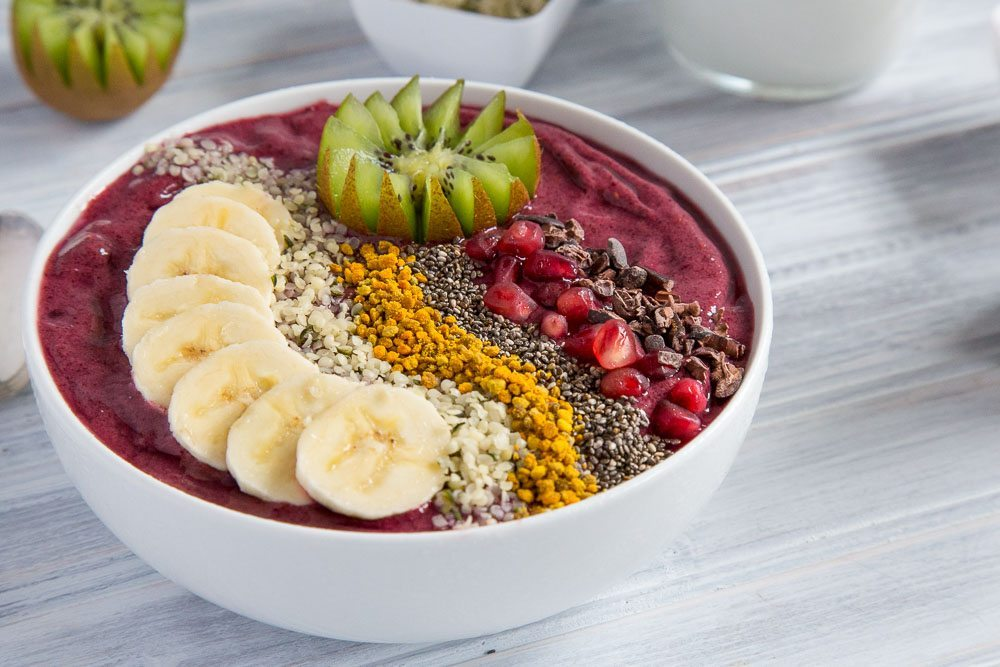

|  |
Recommandations de nutritionnistes pour bien commencer la journée1 pot yaourt naturel+2càs jus de fraise frais+1càs flocans d'avoine |
| |
Omlette light pour le soir!Oui. Que les amoureux des œufs se réjouissent, on peut diminuer de moitié le taux de cholestérol de son omelette! On le sait, tout le cholestérol d'un œuf est concentré dans le jaune (1100 mg pour 100 g de jaune, soit 400 mg pour 100 g d'œuf entier). La solution est simple: il suffit de préparer l'omelette en y mettant un jaune d'œuf pour deux blancs! Car le blanc ne contient pratiquement que des protides. |
un gouté healthy!pourquoi pas!Grâce aux flavonoïdes qu'il contient, le chocolat abaisse les risques de maladies cardiovasculaires et d'accidents vasculaires cérébraux (AVC). Ces antioxydants aident en effet à maintenir la souplesse des artères et à limiter les risques d'athérosclérose |